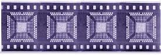
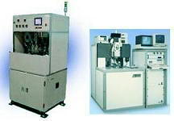

Tape Automated
Bonding (TAB)
Tape Automated Bonding,
or simply
TAB,
is the process of mounting a die on a flexible tape made of polymer
material, such as polyimide. The mounting is done such that the bonding
sites of the die, usually in the form of bumps or balls made of gold or
solder, are connected to fine conductors on the tape, which provide the
means of connecting the die to the package or directly to external
circuits.
Sometimes the
tape on which the die is bonded already contains the actual application
circuit of the die.
The TAB bonds
connecting the die and the tape are known as inner lead bonds (ILB),
while those that connect the tape to the package or to external circuits
are known as outer lead bonds (OLB).
The tape used
in Tape Automated Bonding is usually single-sided, although two-metal
tapes are also available. Copper, a commonly-used metal in tapes,
can be electrodeposited on the tape or simply attached to the tape using
adhesives. The metal patterns of the circuit are imaged onto the
tape by photolithography.
Standard
sizes for polyimide tapes include widths of 35 mm, 45 mm, and 70 mm and
thicknesses between 50 to 100 microns. Since the tape is in the form of
a roll, the length of the circuit is measured in terms of sprocket
pitches, with each sprocket pitch measuring about 4.75 mm. Thus, a
circuit size of 16 pitches is about 76 mm long.

Fig. 1.
Example of TAB devices
To facilitate
the connection of the die bumps or balls to their corresponding leads on
the TAB circuit, holes are punched on the tape where the die bumps will
be positioned. The conductor traces of the tape are then cantilevered
over the punched holes to meet the bumps of the die.
There are two
common methods of achieving a bond between the gold bump of the die and
the lead of a TAB circuit: 1) single-point thermosonic bonding; and 2)
gang or thermocompression bonding.
Single-point
bonding, as the name implies, connects each of the die's bond site
individually to its corresponding lead on the tape. Heat,
time, force, and ultrasonic energy are applied to the TAB lead, which is
positioned directly over the gold bump, forming intermetallic
connections between them in the process. Single-point
bonding is a more time-consuming process than gang bonding.
Gang bonding
employs a specially designed bonding tool to apply force, temperature,
and time to create diffusion bonds between the leads and bumps, all at
the same time. Without the use of ultrasonic energy, this type of
bonding is simply referred to as 'thermocompression' bonding. Gang
bonding offers a high throughput rate, and is therefore preferred to
single-point bonding.
After gang
bonding, the die, bonds, tape leads, and part of the tape are covered
with an encapsulant, which provides mechanical and chemical protection
to the circuit after its curing. The die is then electrically
tested, after which the useable part of the tape is punched from the
frame for assembly into the final application.
|
 |
|
Fig. 2.
Examples of Tape Automated Bonding Equipment |
Tape
Automated Bonding offers the following advantages: 1) it allows
the use of smaller bond pads and finer bonding pitch; 2) it allows the
use of bond pads all over the die, not just on the die periphery, and
therefore increases the possible I/O count of a given die size; 3) it
reduces the quantity of gold needed for bonding; 4) it limits variations
in bonding geometry; 5) it has a shorter production cycle time; 6)
it results in better electrical performance (reduced noise and higher
frequency); 7) it allows the circuit to be physically flexible; and 8)
it facilitates multi-chip module manufacturing.
Tape
Automated Bonding, on the other hand, has the following disadvantages:
1) time and cost of fabricating the tape; 2) the need to 'tailor-fit'
the tape pattern after each die; and 3) capital expense for TAB
equipment since TAB manufacturing requires a set of machines different
from those used by conventional processes.
Thus, Tape
Automated Bonding is a better alternative to conventional
wirebonding if very fine bond pitch,
reduced die size, and higher chip density are desired. It is also
the technique of choice when dealing with circuits that need to be
flexible, such as those that experience motion while in operation, e.g.,
printers, automotive applications, folding gadgets, etc. Tape Automated
Bonding is generally more cost-effective for use in high-volume
production, since returns on the time and cost of developing the tape
will be maximized under this situation.
Front-End
Assembly Links:
Wafer Backgrind;
Die Preparation;
Die Attach;
Wirebonding;
Die Overcoat
Back-End
Assembly Links:
Molding;
Sealing;
Marking;
DTFS;
Leadfinish
See Also:
Chip-on-Board (COB); Substrates;
IC Manufacturing;
Assembly Equipment
HOME
Copyright
©
2001-2006
www.EESemi.com.
All Rights Reserved.